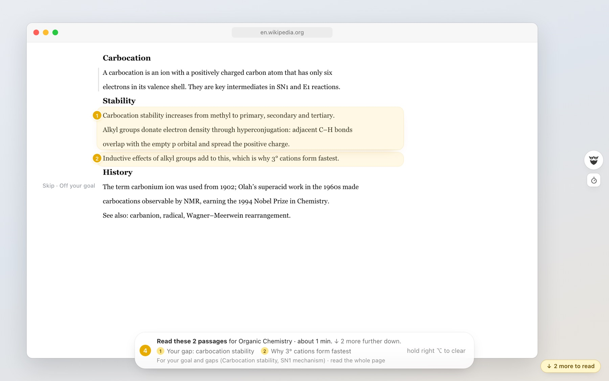
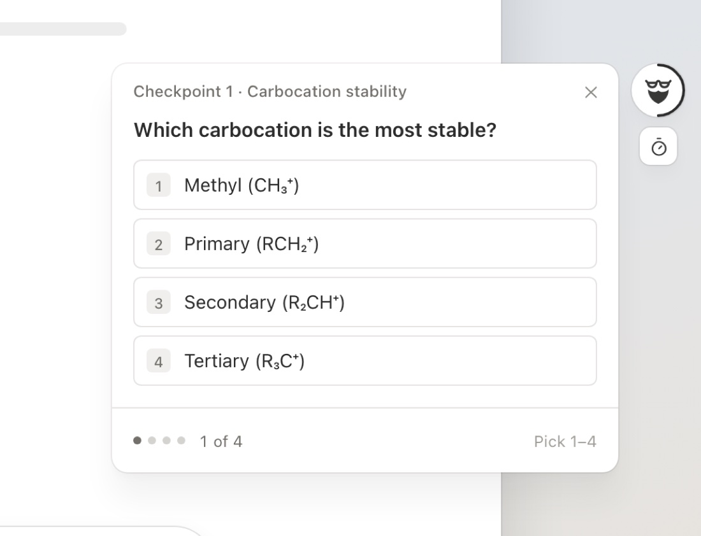
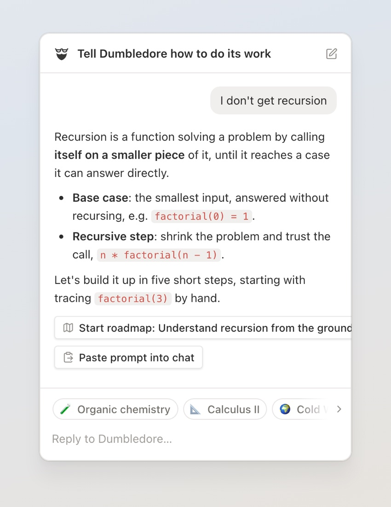

Download Dumbledore
The AI that teaches you how to learn
Dumbledore lives on your screen and knows your whole context: every course, reading, AI chat and question. It helps you use history’s most powerful tools in the way that makes you learn the most, and quizzes you until it sticks.



Your tutor, right on your screen
Knows your whole context
Your courses, goals and exam dates. What you read, what you asked, where you got stuck. Dumbledore remembers all of it, so every bit of help fits you.
Lives on your screen
It’s there in every article, PDF and AI chat you open. No copying, no explaining, no switching apps: it already sees what you see.
History’s most powerful tools, used right
ChatGPT, Claude and Gemini can do your homework for you. Dumbledore makes them teach you instead, with the right prompt at the right moment.
Makes sure you learn
Quick quizzes prove what you really know, spaced reviews bring back what you’re about to forget, and your weak spots become strengths.
One key. Three superpowers.
A better prompt
In any AI chat, Dumbledore writes the perfect next prompt for what you’re studying. You learn the thing, not just the answer.
What to read
On any article or PDF, it reads the whole page and highlights exactly what you need, and tells you why.
Talk to Dumbledore
Ask anything about your studies. It plans your roadmap, saves your questions and keeps track of what you find hard.
Up and running in two minutes
- Download Dumbledore, open the file and drag Dumbledore to Applications.
- Open Dumbledore. Because it isn’t notarized by Apple yet, macOS stops it the first time. Go to System Settings → Privacy & Security, scroll down and click Open Anyway.
- Allow Accessibility and Screen Recording when Dumbledore asks. This is what lets it watch your screen and hear the right ⌥ key.
- Tell Dumbledore what you’re studying. That’s it: open your AI chat and tap right ⌥.
Dumbledore works right away with a free AI service, which can be slow. For fast answers, add your own Gemini key in Settings → AI providers. What it sees becomes notes stored on your Mac; text it needs to think about is sent to the AI provider. It never reads password managers or apps you exclude.